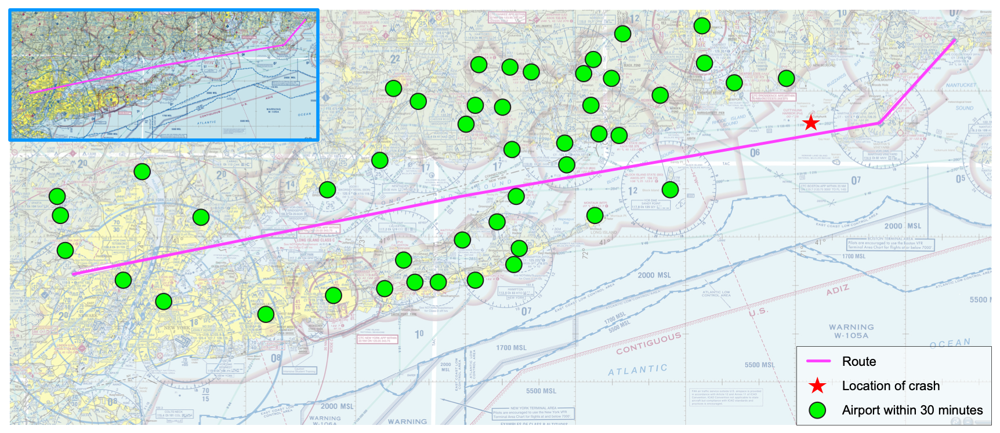

JFK Jr.’s Last Flight and What We Learnt From It#
In July of 1999 John F. Kennedy Jr., son of the former US president, was killed in an airplane accident together with his wife and her sister. He was flying his own airplane. JFK Jr. lost control of the aircraft because at the time of the flight visibility was challenging. He was not qualified to fly by relying on instruments only.
This was a tragic accident. It was also totally preventable. As the tragedy fades into history, the incident serves a powerful lesson that goes beyond aviation safety. It is a lesson about understanding our strengths and skills, realizing our limitations, and being proactive when we sense something is wrong.

As the flight progressed to the northeast, the pilot passed 46 airports where he could have landed safely to wait for better conditions.#
Many aviation analysts point out that the pilot passed 46 airports where he could have landed for safety. And that’s true. As he flew to the northeast, JFK Jr. may have grown apprehensive of the conditions. The haze in the air limited the visibility. And as evening came, the thin line separating water from sky, the horizon, became invisible. Without a horizon, and without visual cues to the ground, pilots must rely on instruments to keep an airplane flying level. Instrument flying requires additional training and can be overwhelming in the beginning.
There is another issue with this flight, that I found more troublesome. Investigators determined that the pilot did not communicate with anyone after takeoff. Pilots can talk to air traffic control any time for information, clearances, and other matters. Certain flights are required to be in touch with air traffic control all the time. Small private planes flying in good weather and outside restricted space do not have to.
As conditions became more challenging, the pilot must have grown even more apprehensive, even frustrated and maybe panicked. He may have tried to conceal his emotions from the other passengers. And yet, with the push of the button he could have asked an air traffic controller for assistance.
We’ll never know why JFK Jr. did not ask for help. Maybe it was a matter of pride. Perhaps he felt shy speaking over the radio. Or he did not want to disappoint his passengers by turning around. It’s certainly possible that he could have overestimated his abilities. Such emotions can be so dangerous that student pilots are taught how to recognize and manage them. Pilots can exhibit certain hazardous attitudes: anti-authority, impulsivity, invulnerability, macho-ism, and resignation. There is an antidote for each hazardous attitude that can prevent a pilot from unfortunate situations.
These attitudes apply in other aspects of our lives. Certainly, when we try to learn something like programming. The antidotes for pilots apply equally to students in programming classes.
For anti-authority (“don’t tell me how to do it”), the antidote is to follow the rules.
For impulsivity (“do it quickly”), the antidote is to think first.
For invulnerability (“it won’t happen to me”), the antidote is to anticipate that it could happen to you.
For macho-ism (“I can do it”), the antidote is to consider that taking chances is foolish.
And for resignation (“what’s the use?”), the antidote is to think that you are not helpless and that you can make a difference.
In aviation, hazardous attitudes can kill. In coursework, they can lead to disappointing outcomes that may disqualify you from your desired major. These disappointing outcomes are preventable. Here’s how to prevent them.
Start homework early#
Start working on assignments as soon as they are posted.
At the very least, read the assignment, and internalize what it asks and how you can achieve it. Programming is a very precise discipline and its notation is dense with information. For example, an assignment asking for a method with signature boolean isLowerCase(String s) that tells if a string is all in lower case, contains part of the answer.
boolean isLowerCase(String s) {
boolean result = false; // assume answer is no
// do some magic here to determine actual value of result
return result;
} // method isLowerCase
So now you can focus on how to tell if a String is all in lower case. You can write some pseudocode or draw a simple flow chart, trying to solve the problem. After 10 minutes you may have a solution. Or you may have something better than a solution: a question for the instructor. Reach out to the instructor with your question. You may not get a direct answer, but you may get hints that will get you closer to the answer. By the way, the correct code for this example problem is:
static boolean isLowerCase(String s) {
boolean result = true; // Assume the answer is yes
for (int i = 0; i < s.length(); i++) { // traverse the string, letter by letter
result = result && ('a' <= s.charAt(i) && s.charAt(i) <= 'z'); // one non lower case letter spoils the boolean
}
return result; // report back
} // method isLowerCase
Communicate#
Reach out to the instructor as often as you need.
Practice#
Anytime you ask yourself if some idea works or not, try it out. If you want to test a simple idea, JShell is an awesome tool (and available on your virtual machine). There are also online sites with JShell functionality.
For more complicated questions, write some code in IntelliJ (or your favorite IDE or editor) and try to compile it. Even if it doesn’t compile right away, you have a scaffold to work with. Share that code, incomplete as it may be, with the instructor and work together on it.
Practice is not limited to homework assignments. The book contains quite a few problems and programming projects. Select one, and try to solve it on your own. Bring your questions about it to the instructor. Try some programming projects from the first half of the textbook (Chapters 1-8).